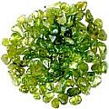

Alimento, dieta e nutrição influem na saúde dental e na cárie
O que comer, de sorte que seus dentes não sejam comidos...
Dieta e a qualidade nutricional do alimento consumido (uma cenoura não é necessariamente igual a qualquer outra cenoura, mesmo se o sabor for o mesmo) é sem dúvida um elemento importante tanto na preservação como na cárie dentária. E isso não inclui apenas o alimento que você tem comido e os fluidos que tem bebido desde seu primeiro dia na Terra, mas até mesmo inclui a dieta de sua mãe durante a gravidez (e se crermos nas observações de alguns autores/pesquisadores, a dieta de seus ancestrais!)
De fato, que a dieta desempenha um papel decisivo para a saúde da dentição da maioria das pessoas, é fato indiscutível até mesmo entre os proponentes da odontologia convencional. Assim, as páginas seguintes mostram numerosos elementos de uma dieta favorável aos dentes para tratar, curar, fortalecer e conservar seus dentes – bem-vindo!
(Eis aqui uma primeira dica para começar; -): Você sabia que chocolate é bom contra os dentes???)